{kind=link}
{kind=link}
{kind=link}
{kind=link}
{kind=link}
{kind=link}
{kind=link}
{kind=link}
{kind=link}
{kind=link}
{kind=link}
{kind=link}
{kind=link}


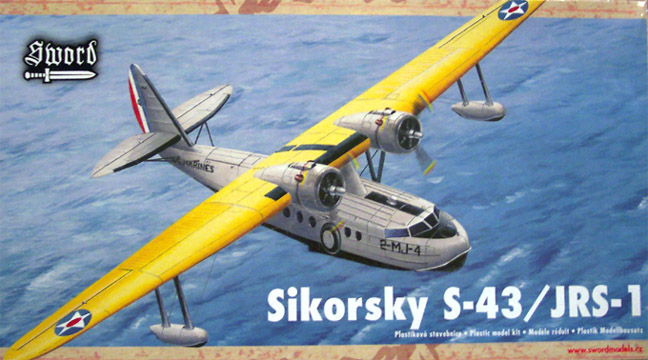
Model, images and text copyright � 2003/2005 by Matt Swan
STATISTICS
Kit: Sikorsky S-43/JRS-1 1/72 scale
Kit #: KPS72019
Price: $50.00 MSRP
Decals: Markings for 2 military aircraft
Reviewer: Matt Swan
Pros: Excellent instructions, finely detailed panel lines.
Cons: Lack of locator pins, clear parts slightly cloudy. No civilian decals.
BACKGROUND
I have always had a kind of romantic fascination with flying boats, especially the Sikorsky line of flying boats. The thought of flying to an exotic, remote area and being able to land in a bay or river delta, go explore and then fly home or even camp in the area like a giant flying mobile home always gave me plenty of day-dream ammunition. Czech Master came out with their S-38 and S-39 resin flying boats earlier this year and now Sword from the Czech Republic has just released the S-43, the last of a fabulous series of flying boats from Sikorsky.
The S-43 was launched on June 5, 1935. Equipped with two 750hp engines, a top speed of 190mph, and a range of 775 miles, the S-43 reclaimed some of the commercial interest that the original S-38 had brought Sikorsky from his buyers. The civilian S-43 amphibian was smaller version of the 4-engine S-42 flying boat used by Pan American to make survey flights across the Pacific. These were often referred to as �Baby Clippers�. Seventeen of the fifty-three S-43s manufactured were purchased by the US Navy; fourteen went to Pan Am Airlines, and four flew West African routes for the French airline A�romaritime, as well as airlines in Russia, Norway, China, and the Philippines. Four of the S-43s were also put to use in shuttling passengers of Inter Island Airways from Honolulu to the major islands of Hawaii. Inter Island Airways became Hawaiian Airlines in October of 1941 at which time they retired the Sikorsky aircraft in favor of DC-3s.
Howard Hughes purchased one for a proposed around the world flight. Although Hughes switched to a Lodestar landplane for his journey, he kept the luxurious S-43 with its modified flush-riveted skin, 1,100hp Cyclone engines, and increased fuel capacity for personal flights. That plane crashed at Lake Meade, Nevada in 1943. It was repaired and stored at the Hughes Tool Company in Houston, Texas until 1977. It was then sold to Van Kregten Enterprise of San Jose, California for a planned museum display.
While a generally highly-regarded model, an unplanned demonstration of the S-43's power occurred on April 14, 1936 when, Boris Sergievsky, the chief test pilot for Sikorsky, made the world's first single-engine takeoff in a multi-engine plane after losing fuel pressure to the plane's right engine. That same day Boris Sergievsky piloted the S-43 to an altitude record for Class C3 amphibians of 27,950 feet.
The Navy used 15 military versions, JRS-1�s, primarily as utility transports; some were also assigned to the Army (OA-8 and OA-11) and the Marines. The thirteenth production model of the S-43 has resided at the National Air and Space Museum since 1960. This aircraft is one of ten, which survived the attack on Pearl Harbor on December 7th, 1941. Armed with bombs and depth charges fitted to the wings, it was one the first aircraft to be launched after the attack to hunt for the Japanese fleet.
THE KIT
Sword is not a main-line producer and its products are the result of limited/short-run technology and I had this in mind as I opened the box. Immediately I noticed something different. The Sword kits usually come in an end-opening box where you have to slid the bag of parts out. I have the N1-M Jeep kit and it�s like this. The S-43 is in a heavy cardboard box with a conventional lift off top. The differences did not stop there, on the Jeep kit the instructions were a single fold over page with a basic exploded view. The S-43 instruction book, and I mean book, is the first thing I saw. I have in my hands a twenty-page instruction book reminiscent of something from a Pro-Modeler kit. It includes a nice little history of the S-43, parts breakdown and color chart. It does not refer to any ANA or FS numbers, simply color names. The last few pages cover decal placement for two different military aircraft, landing gear details and rigging layouts for the stabilizers and outboard floats.
Next out of the box comes a single plastic bag containing 4 trees of parts molded in light gray plastic. There are 115 pieces here that display finely engraved panel lines, relatively little flash and sprue gates that are anything but limited run quality. The sprue gates are of a size similar to any standard run injection molded plastic model from steel molds. There are a few injector pins on interior areas that will need to be removed but all exterior areas are well molded. There is one injection-molded tree of clear parts (23) that do not appear to be excessively thick, as they tend to be in most limited run kits. The clarity of the parts is good to fair; a treatment of Future floor coating should fix them right up. Also we have a bag of resin pieces. There are 25 pieces caste in light gray resin that are of outstanding quality � no air bubbles, no molding defects, no excess flash and great level of detail, especially for 1/72 scale. The resin pieces cover the interior seats for the crew and passengers, the engines and exhaust manifolds. Overall there are 163 individual pieces for this aircraft.
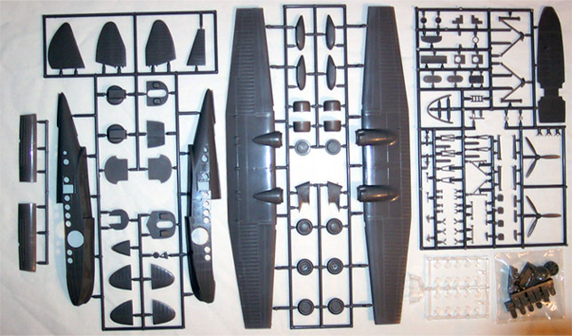
And finally we come to the decals. They are not as exciting as the rest of the kit. There are no stencils, only the basic markings for the two aircraft. Registry and color density appear to be good and from looking at the sheet they do not appear to be excessively thick.
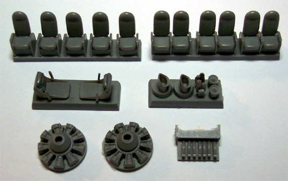
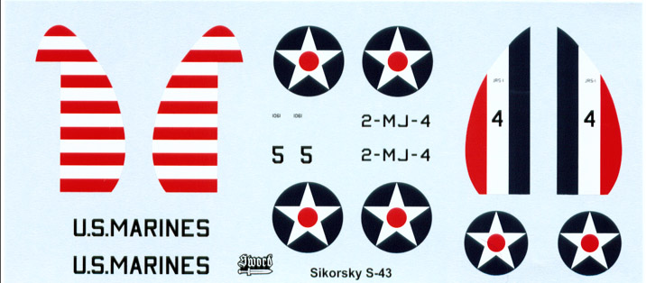
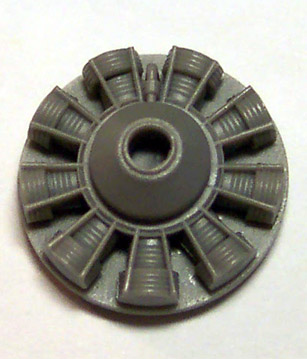
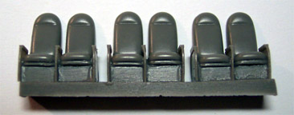
I removed the main fuselage and wing pieces from the trees and checked the fit. Panel lines matched up well and the wing tips meet evenly at both ends. There are no locator pins anywhere on the kit, which is normal for a Sword product. The surface of the parts is smooth and free of any Orange Peel affect.
CONCLUSIONS
This is an unusual and historically significant aircraft. The quality of the kit was far above what I was expecting. I have watched the price of Sword kits climb recently and this kit demonstrates where that money is going. I had to pull an older Sword kit from the stash to compare the manufacture address to be certain that it was the same company. Not only am I looking forward to building this kit but can highly recommended it for modelers of moderate to high experience. Review kit complements of my pocket.
CONSTRUCTION
2/1/05
Well, I kind of got involved in a group build focused on seaplanes so it seemed like a good time to dig this kit out of the stash and see how well she goes together. I�m starting with cleaning up the interior fuselage area and wheel wells. There are several large injector pins inside the fuselage, on the main floor pan and inside the wheel wells that need to be removed. Large pieces are chopped off with my sprue cutters then finished with a razor knife. The boogers inside the wheel wells are removed with a fine burr bit on my Dremel then scraped with a leaf shaped razor blade.
The primary interior bulkheads went together without a hitch. The resin crew seats were attached with some gap filling superglue and the other plastic details were added. I see that I will need to soften the connection of the control yokes with some Tenex 7R and straighten that piece out. I had to file the bottoms of the wheel well inserts a bit to get a good fit and they were then glued in place. These acted as alignment pieces for the inner bulkheads and all these pieces need to be fit while the glue is still soft to avoid fit problems later.
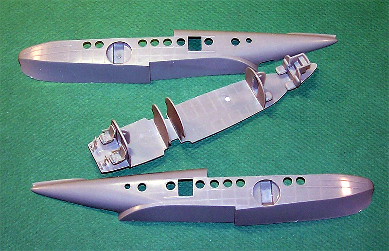
The rear crew jump seats were installed and then the two inner doors. These I placed in an open position. The instructions indicate that the tail wheel should be installed at this time but I am electing to leave it off until after the model is painted. Things are still a little dusty but progress is rapid at this point.
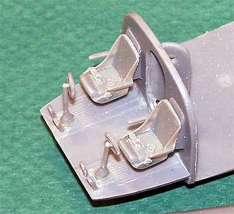 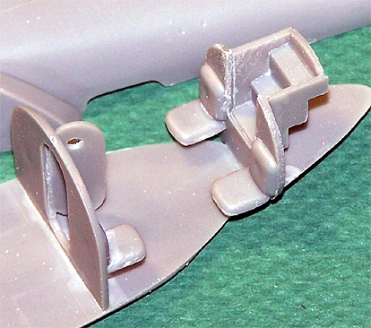
2/3/05
The floor pan was dusted off with some compressed air and airbrushed interior green. The crew seats were painted and the assembly was set aside to dry. Looking at the main wing now the instructions suggest building the primary wing then adding the wingtips later on. I don�t like this approach so I attach the wingtips then assemble the wing. This gives me a much better surface alignment.
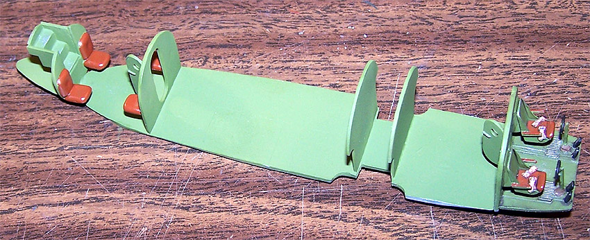
The central wing pylon is assembles as is the rudder, cabin roof panels and wing floats. Once the glue has set the seams are all sanded smooth. The passenger seats are all removed from the pour block and airbrushed dark gray.
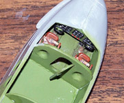
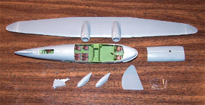
Once this is dry I come back with some dark earth and paint the seat cushions. I am not going to bother with making lap belts for these seats as you would never be able to see them when complete anyway. Each seat is super-glued in place on the floor pan. The floor gets a little steel dry brushing in the traffic areas and a wash with dark brown/black sludge was. The dash was done with interior green then the three inset panels were painted flat black. The dials had drops of white paint added then Reheat instrument decals were placed over them. The dash was then glued to the interior of the left side fuselage and test fit to the right while the glue was still soft. Now the floor pan is test fit to the fuselage. Everything looks good and these pieces are glued together. I have not inserted any of the round windows, as the instructions seem to indicate that they get placed from the exterior. Now that the fuselage is glued together I start to wonder if this is so. Too late now, I�ll just have to deal with it as construction continues. And another oops, I forgot to place the short ladder at the rear access so will have to place this with tweezers through the open hatch. Don�t forget, those small pictures are linked so you can click on them for larger views.
2/6/05
As I have been working on this I have been considering the various options for marking the aircraft and their impact on the construction process. If I was going to do a single color scheme then the model could be completely assembled then painted. The kit offers one scheme like this and I had considered briefly doing the model as a civilian Island Hopper but was unable to come up with appropriate decals. I have a 1/72 Do-26 from Mach-2 (what a crappy kit that was) hanging from the ceiling and it is done in the early Luftwaffe scheme with the yellow wing so I thought it would be interesting to do this with the yellow wing and position it near the other model. So there it is, I�m doing this in early Marine Corp markings with the yellow wing. Now, how will this impact the construction process? Looking at the aircraft we really have two very distinct assemblies, the main cabin area that includes the tail surfaces and the wing including the engines. Since all yellow appears on the wing I have decided to complete this subassembly, paint the black markings and the yellow upper surface, mask this stuff off then attach the wing to the rest of the model for the light gray coat. Now that this has been decided lets get on with the wing construction.
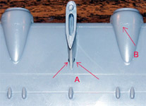
I have already assembled the two pieces of the main wing pylon and now attach it to the model making certain that it is at a ninety degree angle to the main wing surface. Lining up the pylon was easy but right away I saw that the rear mounting hole was oversized and left openings that would have to be filled (see arrow A in clickable picture at right). I filled this with Squadron White putty and smoothed it out with some acetone based fingernail polish remover on a cotton swab. The crescent holes were filled and no sanding was needed.
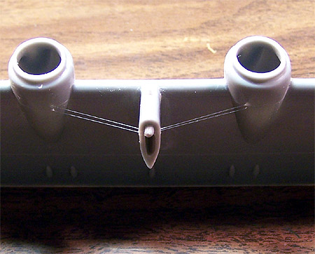
While placing this piece I was also thinking ahead to the rigging aspect. Arrow B indicates the small dimples that appear in many places as marker points for rigging. With each of these I use a fine drill and open the hole completely through the plastic. Using .004 invisible thread I secure the pylon end with a spot of super-glue and accelerator then thread the opposite end through the engine nacelle and pull it tight from the inside with tweezers then secure with more super-glue.
Before running this set of rigging I did need to add some putty at the top joint between the pylon and the front edge of the wing. Once this had dried and been sanded the rigging went in. The picture at left shows this step complete. Next the wingtip floats and their rigging will be addressed. The main struts are glued in place and checked for alignment. Once the glue has set the inner cross wires are super-glued in place and trimmed. Before gluing the floats to the wing I drilled each wing rigging point completely through the upper wing surface. Now the float gets glued to the wing. At this point I am keeping the float at a ninety-degree angle to the wing but will change that angle by four degrees to the outside when the rigging is placed.
Still working with the .004 invisible thread I cut short pieces about three inches in length. One end is secured to the float and the opposite is threaded through the wing surface and left loose until all four pieces are threaded.
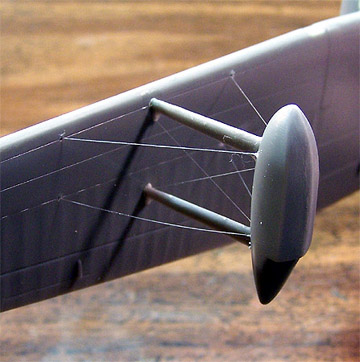
Grasping the outer pair of threads I gently pull them taunt and apply additional pull to create the four-degree angle on the float then spot some superglue to the underside hole while holding the tension. Now the inner rigging is tightened and secured. With a fresh razor knife I cut the excess thread off flush on the topside and fill the hole with a spot of thickened gray primer. Once the primer has dried the area is sanded with fine sandpaper and you cannot tell there was ever a hole there. The second float is finished in the same manner. An unexpected difficulty that has risen is how to grasp the wing for handling without tearing out the rigging. Once all the rigging has been completed I flip the wing over and add the mass balancers and hinges to the underside. I will leave off all the grab handles and antenna from the upper surface until after painting so that none of it will interfere with the masks.
The wing is almost ready for paint, just need to get the engines done. The engine faces are resin and get attached to plastic backing plates. The engines are airbrushed with Gunze-Sangyo Burnt Iron then dry brushed with silver. The gearboxes are done with dark gray and some various details are picked out with brass and red. The inner surfaces of the engine nacelles are done with Interior Green. The instructions tell you to close the nacelle pieces around the engine then attach to the wing. I tried this and the result was less than satisfactory. I quickly removed the engine nacelle halves then glued the engine to the wing and then placed the nacelles around the engine. The results were much better and only a minimal amount of putty was needed to hide the seam. The upper air intake and exhaust pipes were added next. The lower air intake did not seem to be made for this aircraft, the shape and angle were off by a wide margin and I had to reshape both pieces with a diamond needle file before attaching them and still am not real thrilled about the look of those two pieces. The side support struts are placed and positioned to meet the fuselage while the glue is still soft. Add a little tissue packing into the engine nacelles and this subassembly is ready for the paint room.
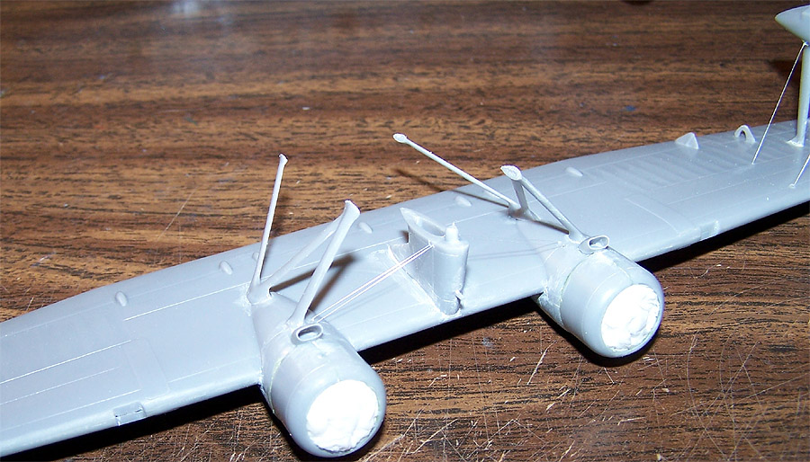
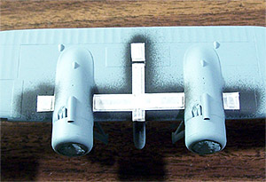
Usually I prime my models with Model Master primer gray cut 25% with lacquer thinner but this tends to give me a somewhat glossy finish and considering the yellow final color I want a flatter primer. With this in mind I changed over to Model Master medium gray cut 25% with lacquer thinner. The wing is primed, allowed to dry then the wing-walk area is shot with Testors flat black. This is allowed to dry most of the day (yeah, I started early) and is then masked. Masking is done in the same manner as my cockpits, with thin strips of masking tape outlining the area and then being filled with larger pieces of tape. Back to the paint room and the upper surface along with a thin margin of the lower leading edge get the first coat of Testors flat yellow. This dries overnight and then next morning a second coat of yellow is applied. Now just look at that wing � only two coats of yellow and I have very good color density. This will be allowed to cure for a couple days before I mask the yellow off and attach the wing to the fuselage section.
My yellow is drying and the day is still young, I shall start working on the fuselage now.
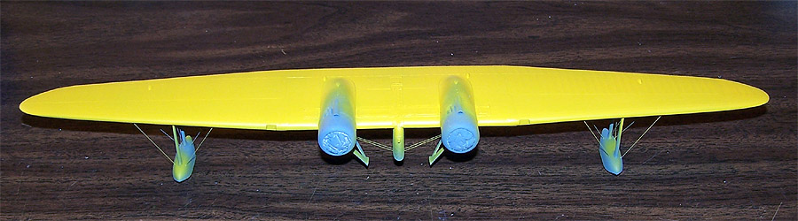
2/8/05
I sat back with a certain sense of satisfaction and regarded my yellow wing and it dawned on me that the black wing-walk had not been extended as far back as it should have. I had to back up on the construction a bit and remask the rear section of wing-walk and continue it all the way to the trailing edge of the wing. Now I can move forward.
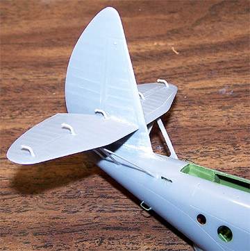
The rudder pieces had been glued together and the seam cleaned up a few days ago and there is no assembly on the elevators so the tail can go together now. I had to drill out a couple of the elevator mounting holes in the fin first then the elevators were glued in place. I used a small square to ensure they were perpendicular to the fin and waited for the glue to set. Using a 240 sanding stick I cleaned up and squared off the mating edges of the fin and the fuselage then glued the two together with some Tenex 7R. I had a small gap right at the leading edge that had to be filled with putty. While all this set up I cut the resin mass balancers off the pour stub and prepared them for attachment. The kit has fine dimples casting into the plastic parts as locators for the resin pieces so no problem there. A little bit of medium super-glue followed by some accelerator finished this step.
The rear stabilizer struts are next, these are carefully removed from the tree and cleaned up. There is a heavy mold separation line down both sides of the A strut as well as several injector points. This may not sound difficult but the piece itself is very delicate. Nearly half an hour was consumed just cleaning these pieces then I find that they come nowhere near the locating dimples on the model. There are two sets of struts back here, a straight one and the A strut along with four grab handles, and all have locator dimples. The grab handles do not look very good on the sprues either. Finally I say, �Screw this! Fill the dimples, place the struts and make new grab handles.�
I measure the kit grab handle, cut a piece of heavy rectangular plastic stock as a former and make new grab handles from medium magnet wire. These look much better than the kit handles and prompts me to make new grab handles for the upper wing as well � more on that later. Some very fine amounts of thinned putty are wiped into the seams and cleaned up with some fingernail polish remover and the tail structure is complete. Next I�ll deal with the canopy.
The canopy is most definitely the wrong shape for the model, someone must have sat on the master before it went to the mold makers. I dipped it in Future, let it cure then masked the panes with thin strips of masking tape. I applied a fine bead of medium super-glue to the top center section of the mating edge only and held it to the top of the fuselage. While doing this I also stressed the canopy slightly to make it bow to fit the fuselage. With both hands involved with this and a paintbrush grasped in my teeth I applied some accelerator to the glue joint.
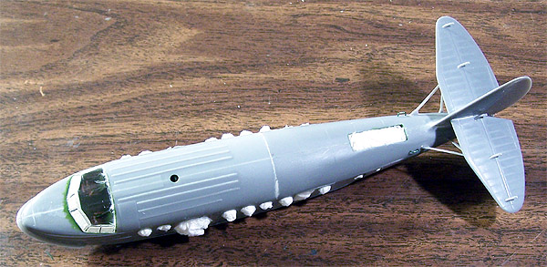
Now, with a dental pick more superglue is added to the outside corners of the canopy and it is stressed a little further to meet the fuselage at the outer edge and more accelerator is applied. From here the lower front seam is filled with Testors Clear Parts Cement and wiped lightly with a wet cotton swab to blend it in. I did get a few small stress cracks near the glue joint but nothing that will be visible once the model is painted.
Time to start packing some tissue into the various openings on the model. Each window is carefully packed with a ball of tissue, the gear bays are filled and the three access ports are filled � now for some primer. You may be wondering just how the hell can I get so much accomplished in such a short time? I must admit � I�ve been on vacation for the last week, a real vacation where I have no place to go and nothing to do but relax and build models. Unfortunately the vacation is over and progress will most definitely slow down now as I move back to my one to two hours a day of modeling time.
2/13/05
Now the entire fuselage section gets a coat of primer and a few seams are touched up. Next the lower hull, service-walk area, cockpit antiglare panel, tail surface leading edges and lower area of the outrigger floats get painted flat black then masked off. I am ready to attach the wing assembly. I am using the tail plane as a reference for level by sighting down the hull and measuring from the aileron joint on the wingtip to the first mass balancer on the elevator to keep the wing square. It took several sightings and measurements followed by slight adjustments while the glue set up but eventually the wing was mounted.
The yellow area had been masked off prior to mounting the wing so now all I need to do is touch up the seam on the main pylon and this is ready for some paint.
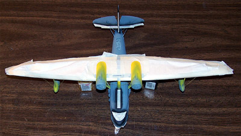
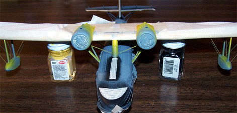
You may click on the above images to view larger pictures
As my Gray I am using Model Master enamel Federal Standard Light Gray #36495 thinned about 30% with lacquer thinner. I worked over the underside surfaces first then the upper areas. Because the top of the wing and the bottom of the hull are already masked I can basically pinch the model from these surfaces to hold it while painting. Two coats of light gray and an inspection to make sure I did not miss any spots and the model was ready to return to the worktable.
Most of the masking material can be removed now. I am leaving the masks on the clear parts until after the final dull coat has been applied. Detail pieces are made for the upper wing like the grab handles and aerial. I had done the landing gear struts earlier and painted them dark gray with silver oleos, now these could be installed. I used bottles of paint and stacks of quarters to keep the model level and position the gear while the glue dried then installed the wheels. The kit gives you two options on the wheels for either covered or uncovered hubs, I choose to use the covered hubs.
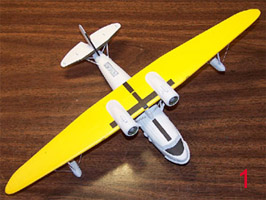
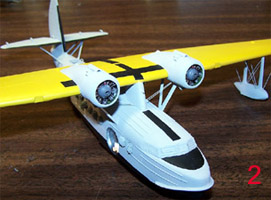
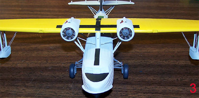
You may click on the above images to view larger pictures
A few little spots on the paint were touched up and the exhaust shrouds were painted. The kit pieces for the upper access doors are very thick and must each be cut lengthwise down the center to display the doors open. I elected to simply make new doors from Evergreen stock.
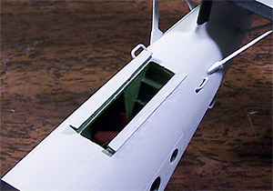
This gave me much cleaner edges to work with and realistically thin material. The paint needs to cure for a day or two and then she can get the first coat of Future in preparation for decals.
In the meantime I will begin the lengthy process of painting the propellers. Lengthy you ask? Yes indeed, these are the early pre-war scheme of silver prop blades with tricolor warning tips. After the blades are cleaned up and the resin hubs are glued in place they are mounted on toothpick handles and painted with Krylon Gloss Black (picture #1). Next they get two coats of Alclad 2 Aluminum (picture #2). This cures overnight then the blade are is masked off. Sword gives us a 1:1 drawing of the propeller blade tip with the three colored bands; I measured this and found the area to be 5.5 mm. To make my life a little easier I increased this to 6 mm and masked that amount off the tip of each prop. This half mm change will come into play in a moment. The propeller tips are now painted flat yellow (picture #3). With three bands over a 6mm area I can make each band 2mm in width. I cut 2mm wide strips of tape and mask the center section of each prop tip then paint the outside end red (picture #4). The last masking is simply to protect the red and some blue is shot onto the prop. All the masks are removed and the central hub is painted black (picture #5) and we have two pre-war propellers ready for the model. This happened over two days so paint could cure.
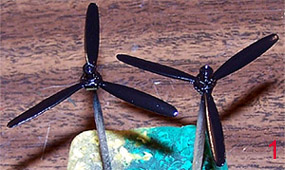
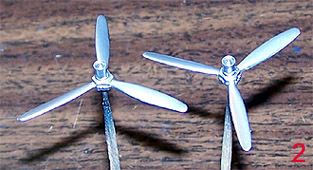
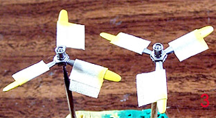
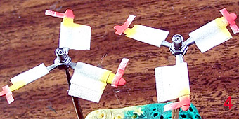
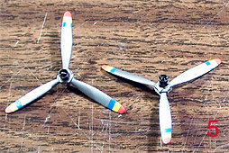
2/21/05
After the paint had cured for a few days the first coat of Future was applied. After yet another night of cure time the decals were placed. The decals behaved very nicely, they lifted off the carrier paper quick and easy, behaved well with Micro-Set and Micro-Sol, seemed to have good color density and good print registry. The kit decals do not have any service stencils or warning markings, just the basic markings for two aircraft. These were allowed to dry down overnight and then were sealed with another coat of Future. From here the weathering effects were applied.
As with most of my models I used a basic sludge wash followed by a wipe down with a slightly damp paper towel pad. Working around the rigging required using a set of fine tweezers with a small paper towel pad held in them. Most other areas were able to be done with the pad held with my fingers. Everything was sealed with some Polly Scale clear flat and the cockpit masks were removed. Now I need to install the clear round passenger windows. The instructions showed these going in place from the exterior, which is why I waited until this moment to install them. I find this was a mistake � none of them fit quite right and each window opening needs to be enlarged slightly. I think I would have been better off masking these little buggers and installing them from the interior early on in the game. Two evenings of modeling time were required to get all the windows installed and the sliding rear access doors in place. A little ground pastel chalk was rubbed aft of the exhaust shrouds and the propellers were attached with some superglue. A little more staining was added around the fuel vents on the upper wing surface and she is ready for viewing.
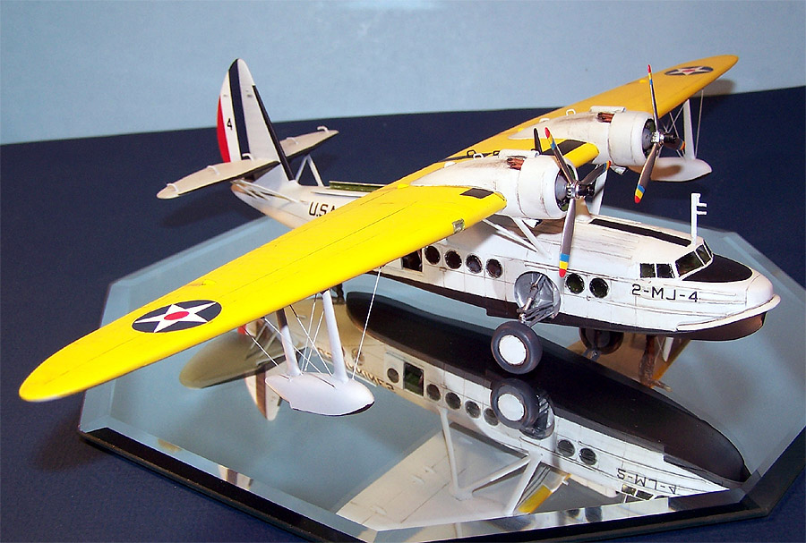
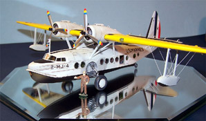
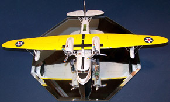
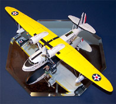
You can click on these small images to view larger pictures.
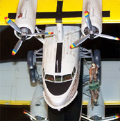
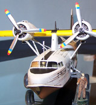
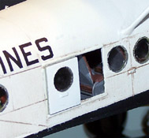
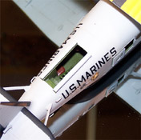
Other than the issues with the clear parts this really was a very pleasant model, after all it only took three weeks to build. I think that installing the rigging early was a good idea even though I snapped off one line two or three times (yes, the same bloody line every time) during the rest of the assembly process. Yellow paint can be a real pain in the butt however; using a good primer first makes all the difference in the world. There are only two things I would like to have different about this kit, some civilian Hawaii Airlines decals and making it in 1/48 scale.